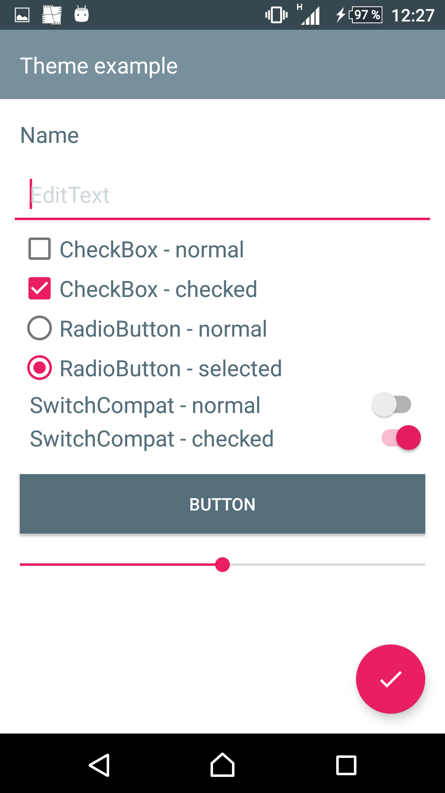
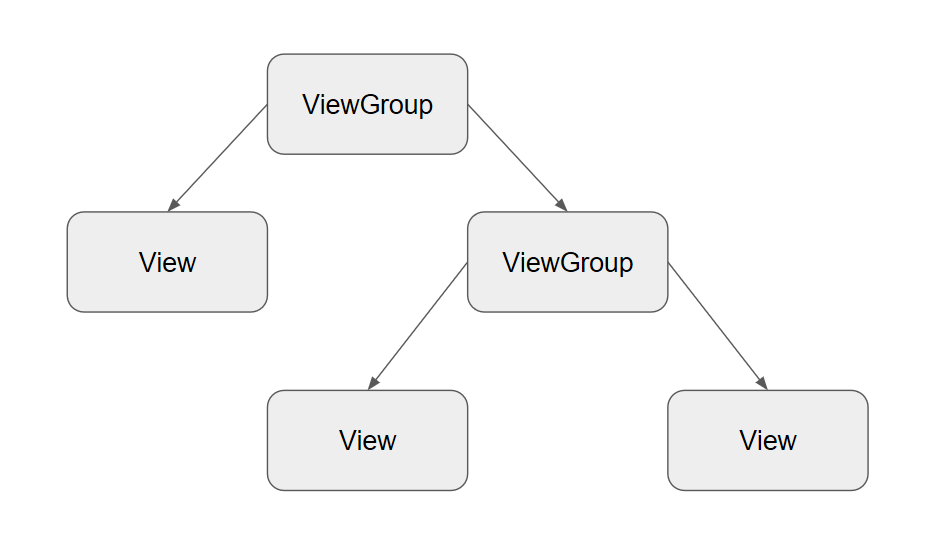
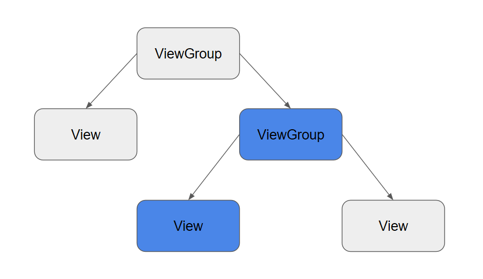
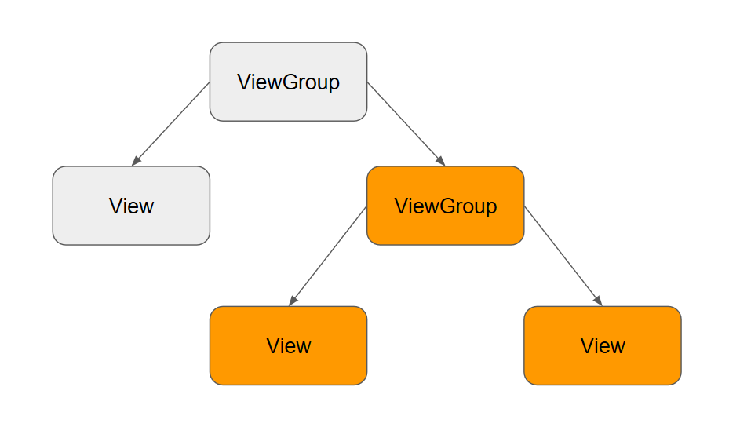
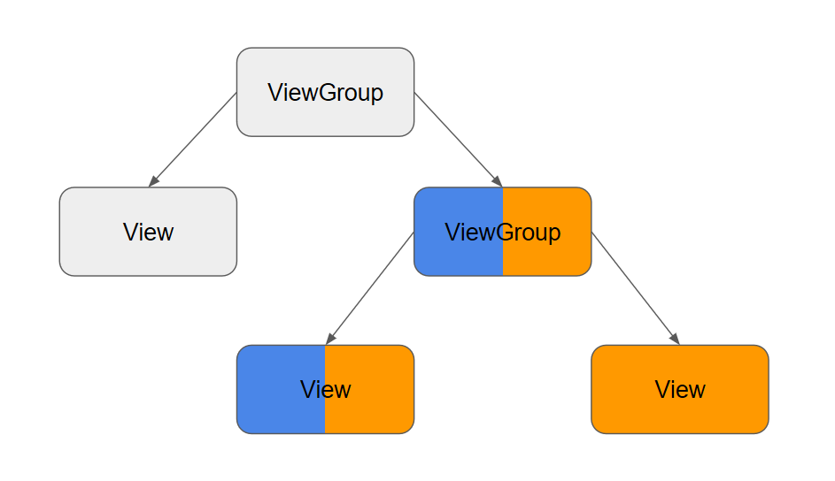
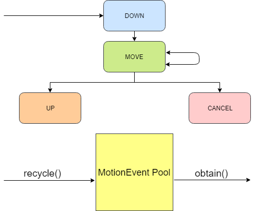
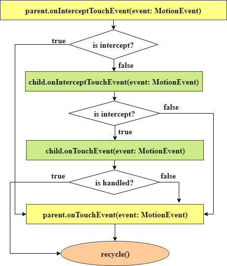

Android User Interface (Part 2)
автор:
Татьяна Распутина
Содержание
- Переиспользование тем и стилей
- Touch Framework
- Реализация Custom View
- Жизненный цикл View
Themes & Styles
<style name="AppTheme" parent="Theme.AppCompat.Light.NoActionBar">
<item name="colorPrimary">@color/colorPrimary</item>
<item name="colorPrimaryDark">@color/colorPrimaryDark</item>
<item name="colorAccent">@color/colorAccent</item>
<item name="android:windowBackground">@color/white</item>
<item name="android:colorControlNormal">@color/colorPrimary</item>
<item name="android:colorControlActivated">@color/colorAccent</item>
<item name="android:colorControlHighlight">@color/colorAccent</item>
<item name="android:textColorPrimary">@color/grey</item>
<item name="android:textColorHighlight">@color/accent</item>
</style>


Themes & Styles

Themes & Styles

Themes & Styles

Themes & Styles

Переиспользование разметки: <include/> vs <merge/>
<RelativeLayout
xmlns:android="http://schemas.android.com/apk/res/android"
android:layout_width="match_parent"
android:layout_height="match_parent">
<ImageView
android:id="@+id/image_view"
android:layout_width="wrap_content"
android:layout_height="wrap_content"
android:layout_centerHorizontal="true"/>
<TextView
android:id="@+id/text_view"
style="@style/AppTheme.Text.CustomStyle"
android:layout_width="match_parent"
android:layout_height="wrap_content"
android:layout_toEndOf="@+id/image_view"/>
</RelativeLayout>
<LinearLayout xmlns:android="http://schemas.android.com/apk/res/android"
android:layout_width="match_parent"
android:layout_height="match_parent"
android:orientation="vertical">
<TextView
android:id="@+id/text_view"
android:layout_width="wrap_content"
android:layout_height="wrap_content"
android:text="TextView"/>
<include
android:layout_width="wrap_content"
android:layout_height="wrap_content"
layout="@layout/complex_layout"/>
</LinearLayout>
<merge xmlns:android="http://schemas.android.com/apk/res/android"
xmlns:tools="http://schemas.android.com/tools"
android:layout_width="match_parent"
android:layout_height="wrap_content"
tools:gravity="center"
tools:orientation="vertical"
tools:parentTag="android.widget.LinearLayout">
<Button
android:layout_width="fill_parent"
android:layout_height="wrap_content"
android:text="@string/start"/>
<Button
android:layout_width="fill_parent"
android:layout_height="wrap_content"
android:text="@string/stop"/>
</merge>Touch Framework Overview
MotionEvent
- Интерпретация зависит от устройства ввода: палец, стилус, мышь
- Содержит данные только об одном событии
- Все MotionEvent хранятся в пуле
Touch Actions
- DOWN - касание экрана
- MOVE - перемещение
- UP - завершение касания (правильный жест пользователя)
- CANCEL - отмена касания
MotionEvent Cycle
Touch Processing

Multi-touch handling
Дополнительные события:
- POINTER_DOWN
- POINTER_UP
У пальца есть две характеристики:
- Индекс - порядковый номер пальца (палец может иметь разные индексы)
- ID - уникальный идентификатор пальца
Support touch handling
- VelocityTracker - отслеживание скорости (похож на MotionEvent - тоже находится в пуле)
- GestureDetector - обрабатывает входящие MotionEvent в готовые события, которые могут быть получены через OnGestureListener. Обрабатывает onScroll, onFling, onDoubleTap, onContextClick.
- ScaleGestureDetector - обрабатывает Pinch-to-zoom
- RotationGestureDetector - нет в Support Library! 2-finger rotation: open source solutions.
Создание View в Runtime
class CustomView : View {
companion object { const val DEFAULT_ANIMATION_TIME = 300 }
private var title: String = ""
private var animationTime: Int = DEFAULT_ANIMATION_TIME
constructor(context: Context) : this(context, null)
constructor(context: Context, attrs: AttributeSet?) : this(context, attrs, 0)
constructor(context: Context, attrs: AttributeSet?, defStyleAttr: Int) : this(context, attrs, defStyleAttr, 0)
constructor(context: Context, attrs: AttributeSet?, defStyleAttr: Int, defStyleRes: Int) : super(context, attrs, defStyleAttr, defStyleRes) {
var titleRes: Int = R.string.title_default
attrs?.let {
val typedArray = context.obtainStyledAttributes(it, R.styleable.CustomView, defStyleAttr, defStyleRes)
titleRes = typedArray.getResourceId(R.styleable.CustomView_title, titleRes)
animationTime = typedArray.getInt(R.styleable.CustomView_animation_time, DEFAULT_ANIMATION_TIME)
typedArray.recycle()
}
title = resources.getString(titleRes)
}
}в файле /res/values/attrs.xml
<resources>
<declare-styleable name="CustomView">
<attr name="title" format="string" />
<attr name="animation_time" format="integer" />
</declare-styleable>
</resources>Использование кастомного View
class MainActivity : AppCompatActivity() {
override fun onCreate(savedInstanceState: Bundle?) {
super.onCreate(savedInstanceState)
setContentView(R.layout.activity_main)
rootLayout.addView(
CustomView(this).apply {
layoutParams = FrameLayout.LayoutParams(
FrameLayout.LayoutParams.MATCH_PARENT,
FrameLayout.LayoutParams.WRAP_CONTENT
).apply {
setMargins(10, 10, 10, 10)
}
}
)
}
}
<FrameLayout
xmlns:android="http://schemas.android.com/apk/res/android"
xmlns:custom="http://schemas.android.com/apk/res-auto"
android:id="@+id/rootLayout"
android:layout_width="match_parent"
android:layout_height="match_parent">
<com.intership.layoutexample.CustomView
android:id="@+id/customView"
android:layout_width="match_parent"
android:layout_height="wrap_content"
custom:title="@string/title"
custom:animation_time="300"
android:background="@color/white" />
</FrameLayout>Жизненный цикл View
Measure Pass
- Обход дерева View сверху вниз
- Каждый ViewGroup устанавливает требования к размерам
- Каждый View вычисляет свои размеры и сохраняет
- Важно: окончательные размеры и местоположения View еще не определены
- Важно: этап measure может быть вызван несколько раз
- FrameLayout - 1
- LinearLayout - 1 (weights - 2)
- RelativeLayout - 2

Жизненный цикл View
MeasureSpec - размер и режим
- UNSPECIFIED
- EXACTLY
- AT_MOST
MeasureState - ответ дочернего View
- 0 - размер подходит
- MEASURED_STATE_TOO_SMALL - View требуется больше места, чем позволяет родительский элемент
Жизненный цикл View
Layout Pass
- Обход дерева View сверху вниз
- Каждый ViewGroup устанавливает окончательные размеры и местоположения
- Выполняется один раз
- width и measuredWidth могут не совпадать
viewGroup.layout(parentLeft, parentTop, parentRight, parentBottom)
viewGroup.onLayout(changed, parentLeft, parentTop, parentRight, parentBottom)
view.layout(left, top, right, bottom)
view.onLayout(changed, left, top, right, bottom)- invalidate() - "перерисовывает" View без изменения размеров.
- requestLayout() - вызов Measure Pass и Layout Pass для всего дерева View.
- forceLayout() - указывает, что дочернее View обязательно должно быть remeasure и relayout. forceLayout() работает только с дочерним View, если он встречается вместе с requestLayout() для его прямого родителя. Вызов forceLayout() сам по себе не будет иметь эффекта, поскольку он не вызывает requestLayout().
Summary
Когда создавать Custom View или Compound View?
- Для создания View с новой, особой функциональностью
- Для расширения функциональности системных View/ViewGroup
Custom View Pitfalls
- Не создавайте Compound View для реализации своих алгоритмов measure и layout в ViewGroup
- Сохранение и восстановление состояния
- Каскадный вызов конструкторов View
- Освобождение TypedArray после инициализации View